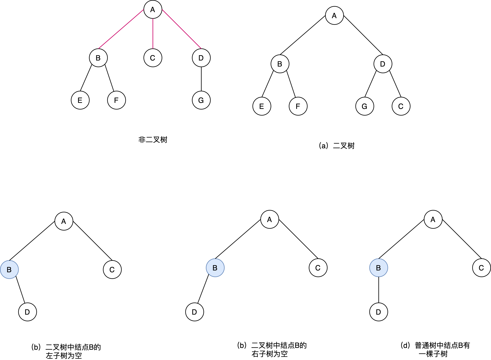
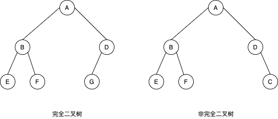
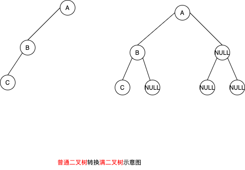
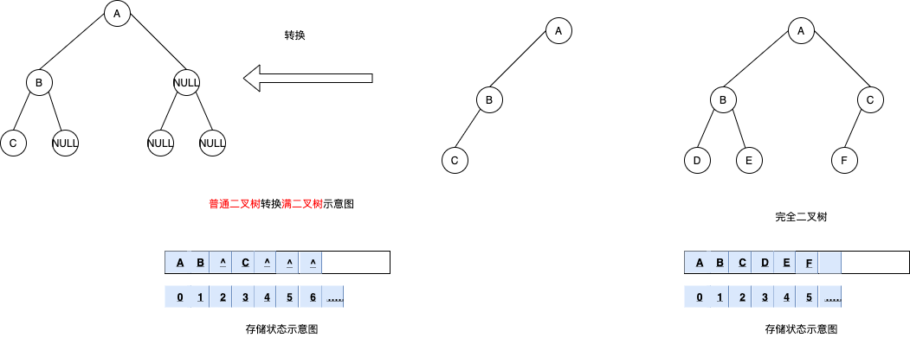
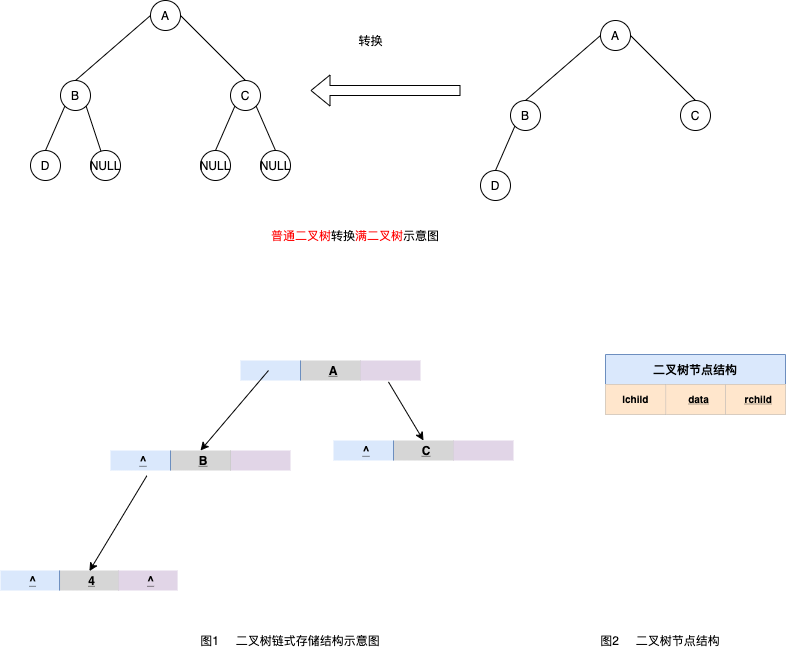
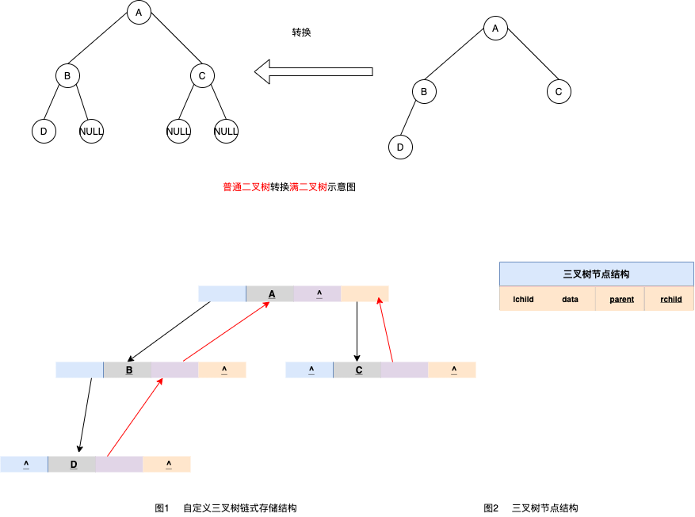

4.1.4.1 二叉树
什么是二叉树，二叉树及其性质详解
什么是二叉树
二叉树是 n(n >= 0) 个结点的有限集合，或是空树，或者是由一个根节点及两棵互不相交的且称为左、右子树的二叉树所组成。可见，二叉树同样具有递归性质。
需要注意的是，尽管树和二叉树的概念之间有许多联系，但它们是两个不同的概念。
树和二叉树的区别| 二叉树中结点的子树要区分左子树和右子树，即使在结点只有一棵子树的情况下，也要明确指出该子树是左子树还是右子树 此外，二叉树结点最大度为2，而树中不限制结点的度数 |

| 简单地理解，满足以下两个条件的树就是二叉树： 1. 本身是有序树； 1. 树中包含的各个节点的度不能超过 2，即只能是 0、1 或者 2； |
二叉树的性质
经过前人的总结，二叉树具有以下几个性质：
- 二叉树中，第 i 层最多有 {% math %} 2^{i}-1 {% endmath %} 个结点。 此性质只要对层数i进行数学归纳法证明即可
- 如果二叉树的深度为 K，那么此二叉树最多有 {% math %} 2^{k}-1 {% endmath %} 个结点。 可由性质1，每一层的结点数都取最大值 {% math %} \sum_{i=1}^{k}{2^{i}-1} = 2^{k}-1 {% endmath %}
- 二叉树中，终端结点数（叶子结点数）为 n0，度为 2 的结点数为 n2，则 n0=n2+1。
- 具有n个结点的完全二叉树的深度是 {% math %} \lbrace\log_2^{10} \rbrace +1 {% endmath %}
| 性质3的计算方法为：对于一个二叉树来说，除了度为 0 的叶子结点和度为 2 的结点，剩下的就是度为 1 的结点（设为 n1），那么总结点 n=n0+n1+n2。 同时，对于每一个结点来说都是由其父结点分支表示的，假设树中分枝数为 B，那么总结点数 n=B+1。而分枝数是可以通过 n1 和 n2 表示的，即 B=n1+2*n2。所以，n 用另外一种方式表示为 n=n1+2*n2+1。 两种方式得到的 n 值组成一个方程组，就可以得出 n0=n2+1。 |
二叉树还可以继续分类，衍生出满二叉树和完全二叉树。
满二叉树
如果二叉树中除了叶子结点，每个结点的度都为 2，则此二叉树称为满二叉树。
如图所示就是一棵满二叉树。
- 满二叉树除了满足普通二叉树的性质，还具有以下性质：
- 满二叉树中第 i 层的节点数为 2n-1 个。
- 深度为 k 的满二叉树必有 2k-1 个节点 ，叶子数为 2k-1。
- 满二叉树中不存在度为 1 的节点，每一个分支点中都两棵深度相同的子树，且叶子节点都在最底层。
- 具有 n 个节点的满二叉树的深度为 log2(n+1)。
完全二叉树
如果二叉树中除去最后一层节点为满二叉树，且最后一层的结点依次从左到右分布，则此二叉树被称为 完全二叉树。
完全二叉树除了具有普通二叉树的性质，它自身也具有一些独特的性质，比如说，n 个结点的完全二叉树的深度为 ⌊log2n⌋+1。
| ⌊log2n⌋ 表示取小于 log2n 的最大整数。例如，⌊log24⌋ = 2，而 ⌊log25⌋ 结果也是 2。 |
对于任意一个完全二叉树来说，如果将含有的结点按照层次从左到右依次标号（如图 3a)），对于任意一个结点 i ，完全二叉树还有以下几个结论成立：
- 当 i>1 时，父亲结点为结点 [i/2] 。（i=1 时，表示的是根结点，无父亲结点）
- 如果 2i>n（总结点的个数） ，则结点 i 肯定没有左孩子（为叶子结点）；否则其左孩子是结点 2i 。
- 如果 2i+1>n ，则结点 i 肯定没有右孩子；否则右孩子是结点 2i+1 。
存储结构
二叉树的存储结构有两种，分别为顺序存储和链式存储。
二叉树的顺序存储结构
二叉树的顺序存储，指的是使用顺序表（数组）存储二叉树。需要注意的是，顺序存储只适用于完全二叉树。换句话说，只有完全二叉树才可以使用顺序表存储。
因此，如果我们想顺序存储普通二叉树，需要提前将普通二叉树转化为完全二叉树。有读者会说，满二叉树也可以使用顺序存储。要知道，满二叉树也是完全二叉树，因为它满足完全二叉树的所有特征。
普通二叉树转完全二叉树的方法很简单，只需给二叉树额外添加一些节点，将其"拼凑"成完全二叉树即可。如图所示：

如图，左侧是普通二叉树，右侧是转换后的满二叉树；
解决了二叉树的转化问题，接下来学习如何顺序存储完全二叉树?
完全二叉树的顺序存储，仅需从根节点开始，按照层次依次将树中节点存储到数组即可。例如，存储如图所示完全二叉树，其存储状态如图

图左侧，普通二叉树转化而来的完全二叉树也是如此。这样我们就实现了完全二叉树的顺序存储。
不仅如此，从顺序表中还原完全二叉树也很简单，我们知道，完全二叉树性质，
| 将书中即诶点按照层次顺序，从左到右以此标号(1、2、3、……)，若结点i有左右孩子，则其孩子结点为2*i; 右孩子即诶单为2*i+1。 |
使用此性质，可用于还原数组中存储的完全二叉树，可以实现顺序存储逆向构建树的过程
此外关于二叉树的层次遍历，在后面会说明
对于深度为k的 完全二叉树， 除第k层外，其余各层中含有最大的结点数，即每一层的结点数恰为其上一层结点数的两倍，由此，从一个结点的编号可推理知道其 双亲、左孩子、右孩子 的编号
| (1) 若 i=1，该结点为根结点，无双亲 (2) 若 i>1, 该结点的双亲为 （i+1）/2 （取整数） (3) 若 ， 则该结点的左孩子编号为2i，否则无左孩子 (4) 若 ， 则该结点的右孩子编号为2i+1，否则无右孩子 (5) 若 i 为奇数且不为1 ， 则该结点的左兄弟编号为 i-1 ，否则无左兄弟 (4) 若 i 为偶数且小于n ， 则该结点的左兄弟编号为 i-1 ，否则无右兄弟 |
显然，完全二叉树 采用顺序存储结构既简单又节省空间，对于一般的二叉树，则不宜采用顺序存储结构。因为一般的二叉树也必须按照完全二叉树的形式存储，也就是要添上一些实际上并不存在的 "虚结点"，这将造成空间的浪费
二叉树的链式存储结构
上一节说明了二叉树的顺序存储，通过学习你会发现，其实二叉树并不适合用数组存储，因为并不是每个二叉树都是完全二叉树，使用顺序表存储会或多火烧存在空间浪费的现象
由于二叉树的结点中包含有数据元素、左子树的根、右子树的根及双亲等信息，因此可以用 三叉链表 或 二叉链表(既一个结点含有3个指针或两个指针) 来存储二叉树，链表的头指针指向二叉树的根节点
先看看二叉树的链式存储结构，如图
此为一颗普通的二叉树，若将其采用链式存储，则只需从树的根结点开始，将各个结点及其左右孩子使用 链表存储即可。因此，图中对应的链式存储结构，如图所示

由图2可知，采用链式存储二叉树时，其结点结构由3部分构成(如图3)
- 指向左孩子结点的指针(Lchild);
- 结点存储的数据(data)
- 指向右孩子结点的指针(Rchild);
节点结构的 C 语言代码为：
typedef struct BiTNode{
TElemType data;//数据域
struct BiTNode *lchild,*rchild;//左右孩子指针
struct BiTNode *parent;
}BiTNode,*BiTree;
图2 中的链式存储结构对应的 C 语言代码为：
#include <stdio.h>
#include <stdlib.h>
#define TElemType int
typedef struct BiTNode{
TElemType data;//数据域
struct BiTNode *lchild,*rchild;//左右孩子指针
}BiTNode,*BiTree;
void CreateBiTree(BiTree *T){
*T=(BiTNode*)malloc(sizeof(BiTNode));
(*T)->data=A;
(*T)->lchild=(BiTNode*)malloc(sizeof(BiTNode));
(*T)->lchild->data=B;
(*T)->rchild=(BiTNode*)malloc(sizeof(BiTNode));
(*T)->rchild->data=C;
(*T)->rchild->lchild=NULL;
(*T)->rchild->rchild=NULL;
(*T)->lchild->lchild=(BiTNode*)malloc(sizeof(BiTNode));
(*T)->lchild->lchild->data=D;
(*T)->lchild->rchild=NULL;
(*T)->lchild->lchild->lchild=NULL;
(*T)->lchild->lchild->rchild=NULL;
}
int main() {
BiTree Tree;
CreateBiTree(&Tree);
printf("%d",Tree->lchild->lchild->data);
return 0;
}
其实，二叉树的链式存储结构远不止图 2 所示的这一种。例如，在某些实际场景中，可能会做 "查找某节点的父节点" 的操作，这时可以在节点结构中再添加一个指针域，用于各个节点指向其父亲节点，如图1 所示：

这样的链表结构，通常称为三叉链表。
利用图 4 所示的三叉链表，我们可以很轻松地找到各节点的父节点。因此，在解决实际问题时，用合适的链表结构存储二叉树，可以起到事半功倍的效果。
在不同的存储结构中，实现二叉树的运算方法也不同，具体应采用什么存储结构，除考虑二叉树的形态外还应该考虑需要进行运算的特点。